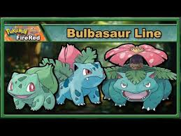
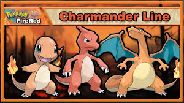
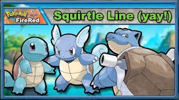

| Home | Batalhas | História | Iniciais | Líderes | Imagens | Lendários | Mapa | Links | Contato |
No início de Pokémon Fire Red, o jogador deve escolher um pokémon inicial que acompanhará toda a sua jornada. Essa escolha é muito importante, pois influencia diretamente nas primeiras batalhas do jogo. Existem três opções disponíveis: Bulbasaur, Charmander e Squirtle, cada um com características e vantagens diferentes.
Bulbasaur é um pokémon do tipo planta e veneno, sendo uma ótima escolha para iniciantes. Ele possui vantagem contra os primeiros ginásios do jogo, o que facilita bastante o progresso inicial. Seus ataques são eficazes contra pokémons do tipo água e pedra, além de ter boa resistência em batalhas. Ao evoluir, Bulbasaur se transforma em Ivysaur e, posteriormente, em Venusaur. Suas evoluções aumentam seu poder e resistência, tornando-o um pokémon muito forte e equilibrado ao longo do jogo.

Charmander é um pokémon do tipo fogo e uma escolha bastante popular entre os jogadores. Apesar de ser mais difícil no início do jogo, devido à desvantagem contra os primeiros ginásios, ele se destaca por seu alto poder de ataque. Charmander evolui para Charmeleon e depois para Charizard. Em sua forma final, torna-se um pokémon extremamente poderoso, com ataques fortes e grande utilidade em batalhas mais avançadas.

Squirtle é um pokémon do tipo água, conhecido por ser uma escolha equilibrada e eficiente. Ele possui vantagem contra o primeiro ginásio e consegue se manter bem em diversas batalhas ao longo do jogo. Suas evoluções são Wartortle e Blastoise, que aumentam significativamente sua defesa e poder de ataque. Blastoise é um pokémon muito resistente e confiável para enfrentar adversários fortes.
